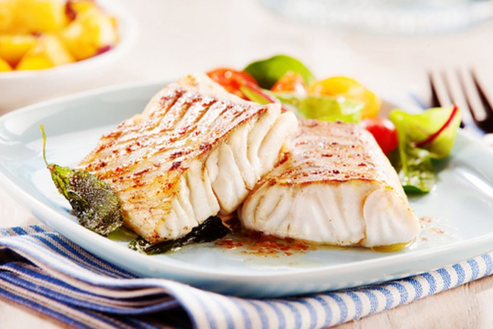

Tilápia grelhada

INGREDIENTES
- 2 filés de tilápia
- 1 dente de alho
- 1 pitada de sal
- 1 unidade de limão espremido
- 1 colher (sopa) de manteiga
- 1 colher (café) de pimenta dedo-de-moça
- 2 colheres (sopa) de salsinha
- 10 unidades de tomate cereja
MODO DE PREPARO
- Tempere os filés com sal, pimenta, alho e limão.
- Na frigideira coloque manteiga e grelhe os filés em fogo médio/ alto por 3 à 4 minutos. Vire o filé e coloque junto na frigideira os tomates e a salsinha picada.
- Grelhe por mais 4 minutos e sirva.